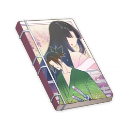

Inazuma · Books & Literature
Princess Mina of the Fallen Nation
This six-volume Inazuman fantasy follows Princess Mina and a wandering samurai through a world drained by war. Its self-aware story depicts a collapsing world and a possible new one, but does not identify its setting with Teyvat’s history.

A six-volume story that knows it is a story
Princess Mina of the Fallen Nation is a six-volume Inazuman fantasy sold at Yae Publishing House. It follows a wandering samurai, a small companion, and Princess Mina through a country destroyed by war.
The narrator repeatedly calls attention to the book’s construction, including characters as roles and non-player characters. These interruptions mark the collection as playful metafiction; they do not prove that the book is a hidden chronicle of Teyvat.
The princess said to bring destruction
The story introduces Mina as a princess blamed for the world’s destruction. The samurai disputes that label and treats it as a convenient excuse for war. Mina herself argues that destruction may be followed by new life, while remaining determined to save the world in front of her.
The book plays with the familiar princess-rescue plot. The samurai says Mina ordered them to leave together and therefore saved herself, keeping her agency in the story rather than making her a passive prize.
Nakura’s Hex and the ruined nation
The collection describes a long war sustained by Nakura’s Hex, a sorcery that drains vitality from people and the land to empower the Nakura Daimyo. The onmyouji of the Sky Tower are said to have created the Hex as a way to preserve the life-force of a declining world.
A group of thirteen samurai defeats the Daimyo, but the nation does not recover; plunder continues and only two escape. The story questions the idea that defeating a villain automatically repairs a devastated world.
A possible end and another journey
The last volume asks whether the world was saved. The samurai walks across a desert after the Sky Tower’s plan appears to have stored the world’s remaining vitality. The book leaves open whether a new world has been created, then sends the samurai into another journey.
That ending invites comparisons with world cycles, the Traveler twins, and Teyvat’s cosmology. No volume directly identifies the fictional world with Teyvat or names Mina as a canonical character beyond the book. Keep those connections in the theory layer.
This is an original CoreGG reading guide, not an official HoYoverse article or a reproduction of the game text. Source links below identify the records used so you can check the original context.
Sources & references
Check these sources for the original game text and reference trail.